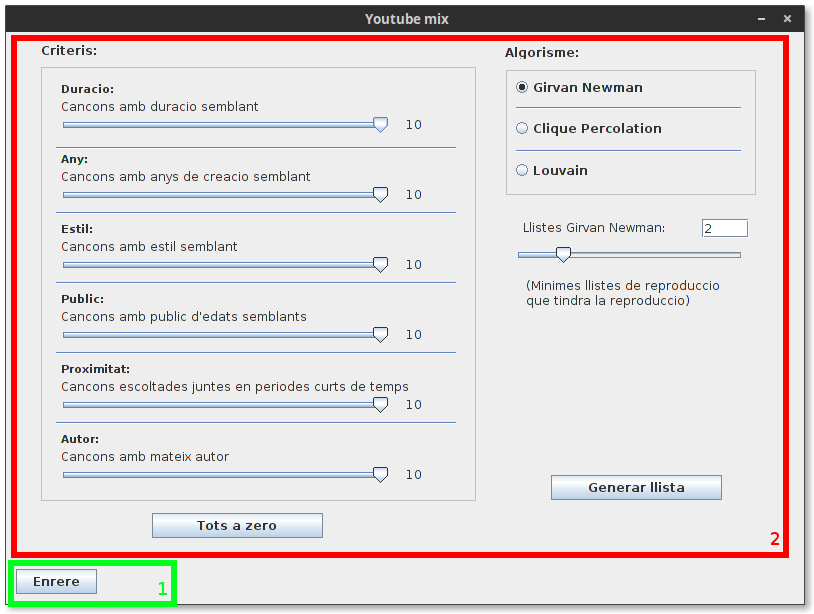

Interficie¶
En aquest apartat veurem la estructuració bàsica d’una pantalla cualsevol de la interficie d’usuari.
Youtube Mix te una interficie basica molt senzilla i intuitiva. La finestra es compon de dues parts bàsiques, la zona de secció i el botó universal de tonar enrere.
- Enrere: Aquest botó es troba present a totes les pàgines, i torna a la ultima pàgina consultada. Es possible que en certes pàgines, al presionar el botó de tornar enrere es demani confirmació. Això es degut a que es troba en una pàgina on s’introdueix o edita informació, i el fet de tornar enrere significa que aquesta informació es perdrà a no ser que sigui desada.
- La zona de secció: Cada apartat del programa disposa d’una finestra pròpa de secció. Aquí es on res realitzen totes les funcions per interactuar amb el programa. Es pot trobar informació mes detallada sobre cada finestra de secció especifica en el seu apartat del manual.